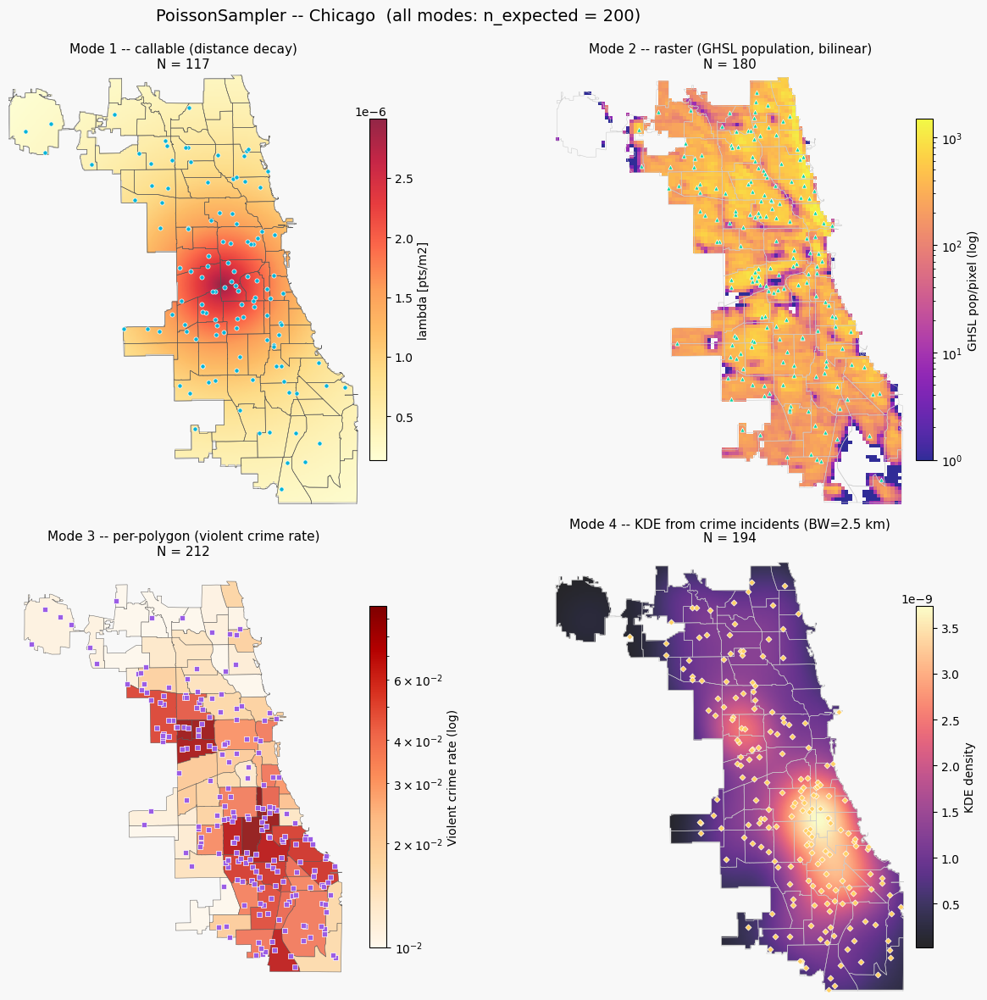

PoissonSampler¶
A Poisson point process places points randomly such that the expected number of points in any region $A$ is
$$\Lambda(A) = \iint_A \lambda(x,y),dA$$
where $\lambda(x,y)$ is the intensity surface (points per unit area). The total count $N \sim \text{Poisson}(\Lambda)$ is itself random – that is what makes it a true inhomogeneous Poisson point process.
PoissonSampler accepts four ways to specify the intensity surface:
|
Algorithm |
|---|---|
callable |
Lewis-Shedler thinning |
rasterio.DatasetReader or (rows, cols) ndarray |
Pixel-selection or bilinear thinning |
1-D array / Series (when |
Rasterise per-feature values, then pixel-selection |
GeoSeries / GeoDataFrame of Points or (N, 2) ndarray |
KDE, then Lewis-Shedler thinning |
Pass n_expected to the constructor to control the expected total count;
the sampler normalises the intensity surface internally.
Omitting n_expected uses the raw integral of the surface as $E[N]$.
Dataset: Chicago community areas (geoda.chicago_health)
Raster: JRC GHSL 2015 population (250 m), pre-built as ghsl_chicago_utm.tif
import numpy as np
import pandas as pd
import geopandas as gpd
import matplotlib.pyplot as plt
import matplotlib.colors as mcolors
import geodatasets
import rasterio
import shapely
from geovalidate import PoissonSampler, PointSampler
%matplotlib inline
/Users/lw17329/miniforge/envs/geovalidate/lib/python3.11/site-packages/tqdm/auto.py:21: TqdmWarning: IProgress not found. Please update jupyter and ipywidgets. See https://ipywidgets.readthedocs.io/en/stable/user_install.html
from .autonotebook import tqdm as notebook_tqdm
chicago = gpd.read_file(geodatasets.get_path('geoda.chicago_health')).to_crs('EPSG:32616')
window = chicago.union_all()
minx, miny, maxx, maxy = window.bounds
cx, cy = window.centroid.x, window.centroid.y
print(f'Window: {(maxx-minx)/1000:.1f} x {(maxy-miny)/1000:.1f} km (UTM 16N)')
print(f'Chicago: {len(chicago)} community areas')
chicago[['community', 'VlntCrRt', 'PerCInc14']].head()
Window: 34.3 x 42.1 km (UTM 16N)
Chicago: 77 community areas
| community | VlntCrRt | PerCInc14 | |
|---|---|---|---|
| 0 | DOUGLAS | 0.0408 | 215254 |
| 1 | OAKLAND | 0.0314 | 54204 |
| 2 | FULLER PARK | 0.0979 | 32828 |
| 3 | GRAND BOULEVARD | 0.0463 | 293535 |
| 4 | KENWOOD | 0.0234 | 261582 |
Controlling expected count with n_expected¶
Pass n_expected to the constructor and PoissonSampler handles the
normalisation internally – no manual scale computation needed.
The actual N is still random (Poisson), so it will vary around the target.
We set N_TARGET = 400 for all four modes so the results are comparable.
N_TARGET = 200
Mode 1 — callable¶
Any function f(x, y) -> array that returns intensity values at an
array of coordinates. Here we use a distance-decay surface centred on
the city centroid.
def lambda_fn(x, y):
dist = np.sqrt((x - cx)**2 + (y - cy)**2)
return 3e-6 * np.exp(-dist / 9_000)
pts_call = PoissonSampler(n_expected=N_TARGET, random_state=42).sample(window, lambda_fn)
print(f'N = {len(pts_call)} (E[N] = {N_TARGET})')
N = 117 (E[N] = 200)
Mode 2 — raster¶
A rasterio.DatasetReader (or a 2-D ndarray) is used as the intensity
surface. With interpolation='linear' (default), bilinear interpolation
feeds Lewis-Shedler thinning; interpolation='nearest' uses the faster
pixel-selection algorithm.
Here we use the JRC GHSL 2015 population raster clipped to Chicago.
with rasterio.open('ghsl_chicago_utm.tif') as ds:
pts_raster = PoissonSampler(
n_expected=N_TARGET, interpolation='linear', random_state=42
).sample(window, ds)
print(f'N = {len(pts_raster)} (E[N] = {N_TARGET})')
N = 180 (E[N] = 200)
Mode 3 — per-polygon intensity¶
When geometry is a GeoSeries or GeoDataFrame of polygons and intensity
is a 1-D numeric array or Series (one value per feature), the sampler
burns the values into a raster aligned to the bounding box and applies
the pixel-selection algorithm.
This is a convenient way to sample proportionally to any areal variable without having to create a raster yourself.
pts_poly = PoissonSampler(n_expected=N_TARGET, random_state=42).sample(
chicago.geometry, chicago['VlntCrRt'].fillna(0)
)
print(f'N = {len(pts_poly)} (E[N] = {N_TARGET})')
N = 212 (E[N] = 200)
Mode 4 — KDE from an observed point pattern¶
Pass a GeoSeries or GeoDataFrame of Points (or an (N, 2) ndarray) and
PoissonSampler fits a 2-D kernel-density estimate internally and uses
it as the intensity surface. Control the bandwidth with the bandwidth
constructor argument (None applies Scott’s rule).
Here we generate synthetic crime incident locations from the per-area violent crime rate and let the sampler learn the spatial pattern.
rng_seed = np.random.default_rng(7)
crime_pts_list = []
for _, row in chicago.iterrows():
rate = max(row['VlntCrRt'] or 0, 0)
n = max(1, round(4 * rate / chicago['VlntCrRt'].max()))
p = PointSampler(n_samples=n,
random_state=int(rng_seed.integers(0, 9_999))).sample(row.geometry)
crime_pts_list.append(p)
crime_pts = pd.concat(crime_pts_list, ignore_index=True)
pts_kde = PoissonSampler(n_expected=N_TARGET, bandwidth=2_500, random_state=42).sample(
window, crime_pts
)
print(f'N = {len(pts_kde)} (E[N] = {N_TARGET})')
N = 194 (E[N] = 200)
Comparison figure¶
All four modes target the same expected count. The intensity surface used by each mode is shown in colour; sampled points are overlaid.
# Build visualisation grids
gx = np.linspace(minx, maxx, 250)
gy = np.linspace(miny, maxy, 250)
GX, GY = np.meshgrid(gx, gy)
grid_pts = shapely.points(GX.ravel(), GY.ravel())
inside = shapely.contains(window, grid_pts).reshape(GX.shape)
# Mode 1 surface
Z_call = np.where(inside, lambda_fn(GX.ravel(), GY.ravel()).reshape(GX.shape), np.nan)
# Mode 2 surface (GHSL raster)
with rasterio.open('ghsl_chicago_utm.tif') as ds:
ghsl_arr = np.maximum(ds.read(1).astype(float), 0.0)
ghsl_tf = ds.transform
nrows_g, ncols_g = ghsl_arr.shape
rext = [ghsl_tf.c, ghsl_tf.c + ncols_g * ghsl_tf.a,
ghsl_tf.f + nrows_g * ghsl_tf.e, ghsl_tf.f]
pop_show = np.where(ghsl_arr > 0, ghsl_arr, np.nan)
# Mode 4 surface (KDE)
from sklearn.neighbors import KernelDensity
kde_vis = KernelDensity(bandwidth=2_500, kernel='gaussian')
kde_vis.fit(np.column_stack([crime_pts.geometry.x, crime_pts.geometry.y]))
Z_kde = np.where(
inside,
np.exp(kde_vis.score_samples(
np.column_stack([GX.ravel(), GY.ravel()])
)).reshape(GX.shape),
np.nan,
)
PT = dict(s=14, zorder=6, edgecolors='white', linewidths=0.5)
fig, axes = plt.subplots(2, 2, figsize=(14, 12))
fig.patch.set_facecolor('#f8f8f8')
# Mode 1 -- callable
ax = axes[0, 0]
im1 = ax.imshow(Z_call, origin='lower', extent=[minx, maxx, miny, maxy],
cmap='YlOrRd', alpha=0.85, aspect='equal')
chicago.boundary.plot(ax=ax, color='#555', linewidth=0.4)
ax.scatter(pts_call.geometry.x, pts_call.geometry.y,
color='#00b4d8', marker='o', **PT)
plt.colorbar(im1, ax=ax, fraction=0.03, pad=0.02, label='lambda [pts/m2]')
ax.set_title(f'Mode 1 -- callable (distance decay)\nN = {len(pts_call)}', fontsize=11)
ax.axis('off')
# Mode 2 -- raster
ax = axes[0, 1]
norm2 = mcolors.LogNorm(vmin=max(ghsl_arr[ghsl_arr > 0].min(), 1), vmax=ghsl_arr.max())
im2 = ax.imshow(pop_show, origin='upper', extent=[rext[0], rext[1], rext[2], rext[3]],
cmap='plasma', norm=norm2, alpha=0.85, aspect='equal')
chicago.boundary.plot(ax=ax, color='#ccc', linewidth=0.4)
ax.scatter(pts_raster.geometry.x, pts_raster.geometry.y,
color='#06d6a0', marker='^', **PT)
plt.colorbar(im2, ax=ax, fraction=0.03, pad=0.02, label='GHSL pop/pixel (log)')
ax.set_title(f'Mode 2 -- raster (GHSL population, bilinear)\nN = {len(pts_raster)}', fontsize=11)
ax.axis('off')
# Mode 3 -- polygon intensity
ax = axes[1, 0]
vmin3 = max(chicago['VlntCrRt'].fillna(0).replace(0, np.nan).min(), 0.01)
vmax3 = chicago['VlntCrRt'].max()
norm3 = mcolors.LogNorm(vmin=vmin3, vmax=vmax3)
chicago.plot(column='VlntCrRt', cmap='OrRd', legend=False, norm=norm3,
edgecolor='#555', linewidth=0.4, ax=ax, alpha=0.85)
ax.scatter(pts_poly.geometry.x, pts_poly.geometry.y,
color='#9b5de5', marker='s', **PT)
sm = plt.cm.ScalarMappable(cmap='OrRd', norm=norm3)
plt.colorbar(sm, ax=ax, fraction=0.03, pad=0.02, label='Violent crime rate (log)')
ax.set_title(f'Mode 3 -- per-polygon (violent crime rate)\nN = {len(pts_poly)}', fontsize=11)
ax.axis('off')
# Mode 4 -- KDE
ax = axes[1, 1]
im4 = ax.imshow(Z_kde, origin='lower', extent=[minx, maxx, miny, maxy],
cmap='magma', alpha=0.85, aspect='equal')
chicago.boundary.plot(ax=ax, color='#ccc', linewidth=0.4)
ax.scatter(pts_kde.geometry.x, pts_kde.geometry.y,
color='#ffd166', marker='D', s=13, zorder=6,
edgecolors='white', linewidths=0.5)
plt.colorbar(im4, ax=ax, fraction=0.03, pad=0.02, label='KDE density')
ax.set_title(f'Mode 4 -- KDE from crime incidents (BW=2.5 km)\nN = {len(pts_kde)}', fontsize=11)
ax.axis('off')
fig.suptitle(
f'PoissonSampler -- Chicago (all modes: n_expected = {N_TARGET})',
fontsize=14,
)
fig.tight_layout()
plt.show()
